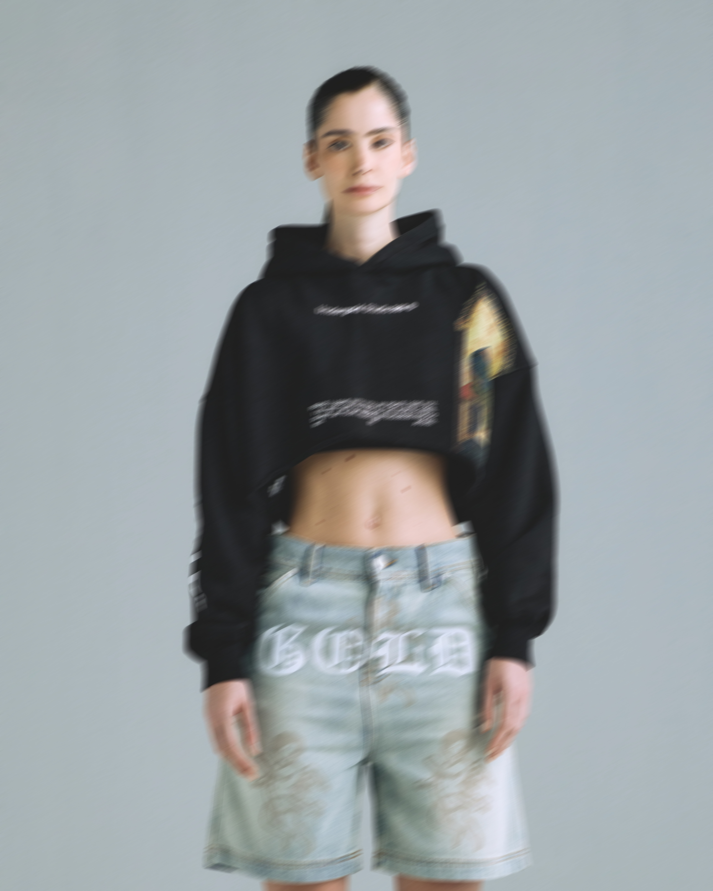
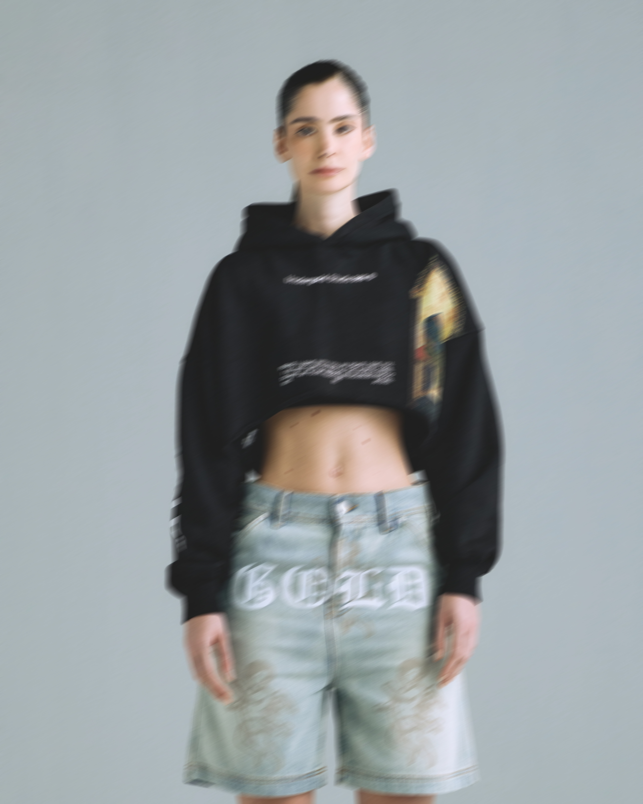

UNDERGOLD
UNDERGOLD no es solo una marca de ropa: es una declaración de crecimiento interior, una manifestación de espiritualidad urbana. Fundada en Medellín en 2016, esta marca nace del cruce entre el lujo y la introspección, entre el streetwear y el “yo superior”. Su esencia vibra con quienes no solo buscan verse bien, sino encontrarse. En cada colección, UNDERGOLD propone una experiencia que conecta la moda con el alma: prendas que son espejos del viaje interno, piezas que invitan a la transformación personal. La marca se ha consolidado como un referente de streetwear sofisticado en Latinoamérica, destacando no solo por su estética, sino por el mensaje profundo que la sustenta.
IDENTIDAD
La identidad de UNDERGOLD se construye sobre la dualidad: ego vs. propósito, oscuridad vs. iluminación, calle vs. alta costura. Su narrativa está atravesada por el deseo de trascendencia. Es una marca hecha para soñadores conscientes, para quienes encuentran en la moda un lenguaje simbólico. Inspirada por la música, el deporte y las culturas urbanas, UNDERGOLD tiene una visión que trasciende el vestuario. En palabras de su creador Simón Bermúdez, “solo transformándonos a través de vencer nuestro ego y miedos entendemos el potencial ilimitado que tenemos”. Este enfoque convierte a la marca en un manifiesto visual del crecimiento personal, una marca que propone reflexionar a través del vestir.
ESTÉTICA Y DISEÑO
UNDERGOLD es elegancia urbana con alma. Su estética fusiona lo místico con lo lujoso, lo sobrio con lo audaz. Utiliza materiales premium, paletas monocromáticas con acentos dorados o metálicos, cortes estructurados que evocan autoridad y fluidez a la vez. Cada prenda parece contar una historia de renacimiento. Hay símbolos esotéricos, frases de alto contenido emocional, referencias a la alquimia, al tarot, al conocimiento interno. Todo se siente pensado con intención. No hay exceso: hay precisión. Es una marca que entiende el poder de lo visual para crear atmósferas, y que convierte cada colección en un viaje narrativo hacia el ser.
IMPACTO
UNDERGOLD ha logrado posicionarse como una de las marcas más sólidas del streetwear latinoamericano, no solo por su calidad, sino por su discurso espiritual. Ha inspirado a una generación de creativos a ver el diseño como un canal de introspección y empoderamiento. Su impacto está en cómo ha elevado el nivel del diseño urbano en Colombia, aportando una visión más conceptual, más elevada, más simbólica. No es raro ver a sus seguidores hablar de la marca como una experiencia transformadora, más que como una simple compra. UNDERGOLD ha creado una comunidad de buscadores, de almas inquietas, de artistas urbanos que visten su evolución personal.

 
